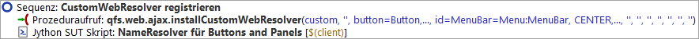

| Version 6.0.3 |
Die Adressierung von Unterelementen komplexer Komponenten wie Listen, Tabellen und Bäumen, via Index, wie im letzten Abschnitt beschrieben, ist nur möglich, weil im Rahmen der erzeugten 'Vorbereitung' eine Konfiguration der Komponentenerkennung erfolgt. Damit wird QF-Test mitgeteilt, wie bestimmte Funktionalitäten wie Textfelder, Buttons, Checkboxen, Datentabellen, Bäume etc. im HTML-Code der Applikation implementiert sind.
Wenn die Funktionalität einer Komponente bekannt ist, hat dies bei der Aufnahme folgende Vorteile:
Außerdem wirken sich die Informationen, die auf Grund der bekannten Funktionalität zusätzlich abgespeichert wurden, positiv auf die Stabilität der Tests aus.
Die Konfiguration der Komponentenerkennung ist notwendig, da
Web-Anwendungen einen begrenzten Satz von Basiskomponenten haben, die in sehr flexibler
Weise genutzt werden können, um komplexe Komponenten und Designs aufzubauen. Ein
Beispiel sind HTML Tabellen, die sowohl für das Seitenlayout genutzt werden als auch für die
Darstellung logischer Tabellen wie der Fahrzeugtabelle. Ohne zusätzliche Informationen kann
QF-Test nicht wissen, wo genau die Layout-Tabelle endet und die logische Tabelle
beginnt. Die Tabellenzelle würde nicht als solche erkannt und als eigene Komponente, z.B.
VehicleTable.td, aufgezeichnet.
Das "td" kommt vom HTML Table Data Element "TD", das im vorliegenden HTML-Code die Tabellenzelle
darstellt.
In der 'Vorbereitung' in der Demosuite ErsteWebTests.qft aus dem ersten Kapitel
oder auch in der über den Schnellstart-Assisten im zweiten Kapitel erstellte, erfolgt die
Konfiguration direkt nach dem Browser-Start.
Das folgende Bild zeigt den Knoten für die Registrierung der Resolver in der Testsuite
ErsteWebTests.qft mit einigen Konfigurationsparametern.
|
|  | ||
|
| Abbildung 13.2: Web Resolver Registrierung in der ErsteWebTests.qft | ||
Über die Parameter erhält QF-Test z.B. die Information, welches HTML-Element eine Datentabelle enthält und welche HTML-Elemente darin dann die Zeilen und Datenzellen darstellen. Diese Konfiguration wurde speziell für den WebCarConfigurator erstellt.
Hinweis An dieser Stelle ist es nur wichtig, dass Sie wissen, dass es verschiedene Möglichkeiten gibt, die Komponentenerkennung durch Resolver zu verbessern.
QF-Test analysiert automatisch die Struktur von Webanwendungen, erkennt die meistverwendeten Web GUI Toolkits (wie Angular, ExtJS, GWT, SmartGWT, Vaadin,...) und installiert passende vordefinierte Resolver.
Offensichtlich sind aber nicht alle Webanwendungen ausschließlich mit solch einem Toolkit entwickelt und nicht für alle Toolkits gibt es vordefinierte Resolver in QF-Test. Sie können durchaus auch auf selbstentwickelte Komponenten stoßen.
Wenn Sie also mit dem Testen Ihrer eignen Webanwendung beginnen und auf Schwierigkeiten stoßen, dass Komponenten beim Abspielen von Aktionen nicht verlässlich wieder erkannt werden, dann kann es Zeit sein, über einen Resolver nachzudenken. Sollten Sie für die Resolvererstellung Hilfe benötigen, kontaktieren Sie bitte unseren Support (support@qfs.de) für Unterstützung.
Es gibt ein Kapitel in der Technischen Referenz des Handbuchs, das tiefergehende Informationen zu CustomWebResolvern enthält und auch wie man bei der Implementierung eines solchen vorgeht, wenn Sie dies probieren möchten.
| Letzte Änderung: 6.9.2022 Copyright © 2002-2022 Quality First Software GmbH |